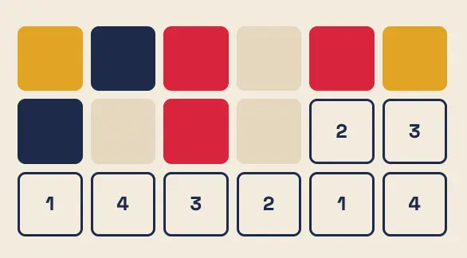
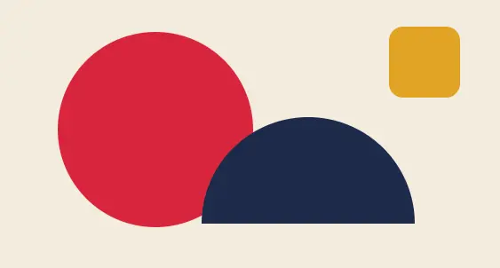

Colorea por números
Pinta y colorea con números, como cuando ibas al cole.
Lo que hago cuando nadie me lo pide: juegos, pruebas y cosas que empiezan con "¿y si...?". Algunas están terminadas y otras no.

Pinta y colorea con números, como cuando ibas al cole.

Tres pruebas optométricas para evaluar tu visión y las ópticas más cercanas en un mapa.

Crea globos, cámbiales el color y explótalos.

Catálogo con AJAX y valoraciones con estrellas. Un proyecto para integrar cliente y servidor.